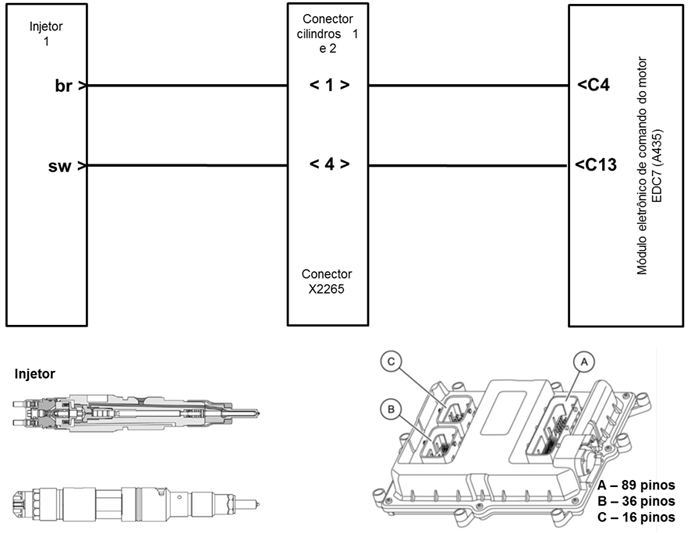
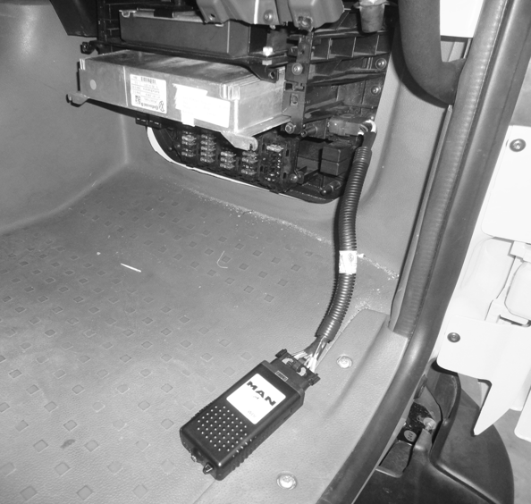

|

Descrição da Falha
Circuito Injetor
(motor 6 cilindros injetor 2) em curto circuito.
Indicação de Falha
Luz de alerta acende constantemente
com os símbolos  e
e  e soa o alarme sonoro
longo, com o veículo andando ou parado. e soa o alarme sonoro
longo, com o veículo andando ou parado.
Enquanto houver falha no circuito
injetor a LIM
permanecerá acesa, a LIM apagará automaticamente assim que a
falhar
for corrigida.
Estratégia de Monitoramento
O
módulo EDC7 monitora o circuito entre módulo, chicote e injetor quanto
a possíveis interrupções da linha, curto-circuito ou outros defeitos
elétricos.
Efeito da Falha
O
fornecimento de combustível para o cilindro será interrompido pela
desativação do injetor com defeito. Consequentemente haverá queda de
potência do motor. Para veículos 4 cilindros há a possibilidade de
desligar.
Possíveis Falhas
FMI 1: curto no circuito.
FMI 4: sinal inexistente.
Aviso
  Embora
seja registrado somente um SPN na memória de falhas do módulo, outros
cilindros desta mesma fileira também podem estar afetados. No caso do
FMI 4 o módulo reconhece exatamente o injetor com circuito
interrompido. Para o FMI 1 o módulo EDC7 atuará por capacitor. Embora
seja registrado somente um SPN na memória de falhas do módulo, outros
cilindros desta mesma fileira também podem estar afetados. No caso do
FMI 4 o módulo reconhece exatamente o injetor com circuito
interrompido. Para o FMI 1 o módulo EDC7 atuará por capacitor.
Registros de Falhas em Outros
Módulos de Comando
Não.
Considerar os esquemas
elétricos do veículo
| Verificação
|
Medição |
Eliminação da
Falha |
|
Ativação do injetor
|
Verificar curso de sinal com o alicate
amperímetro (marcha lenta)
|
–Verificar
os conectores do chicote do módulo até os bicos injetores. Verificar
também as conexões (uniões roscadas) localizadas nos bicos injetores
dentro da tampa de válvulas.
– Verificar os cabos
(também sob a tampa de válvulas)
– Verificar o cabeamento
dos injetores conforme a sequência de combustão dos cilindros
|
|
Injetor, resistência da bobina
|
Medir a resistência.
Valor nominal:
< 2 Ω
|
–
Substituir o injetor, consulte o
manual de reparos |
|
Teste de aceleração
"Run Up"
|
Executar o procedimento conforme as
instruções indicadas na MCO-08
|
–
No caso de interrupção do circuito de um único injetor, somente o
injetor afetado será desativado. Desta forma é possível a execução da
função "Run Up". O procedimento "Run Up" mostrará o
circuito do injetor
com defeito.
– Já no caso de curto no circuito de
um injetor, todos os demais injetores do grupo do capacitor também
serão desativados. Isto significa que em um motor de 6 cilindros em
linha funcionará somente com 3 cilindros. O procedimento "Run Up" que
desativa os grupos por grupos, será interrompido com uma mensagem de
falha, pois o motor funcionará somente com dois cilindros
– Caso nenhuma falha
seja verificada, substituir o módulo EDC7.
|

|
 
|
| |
|